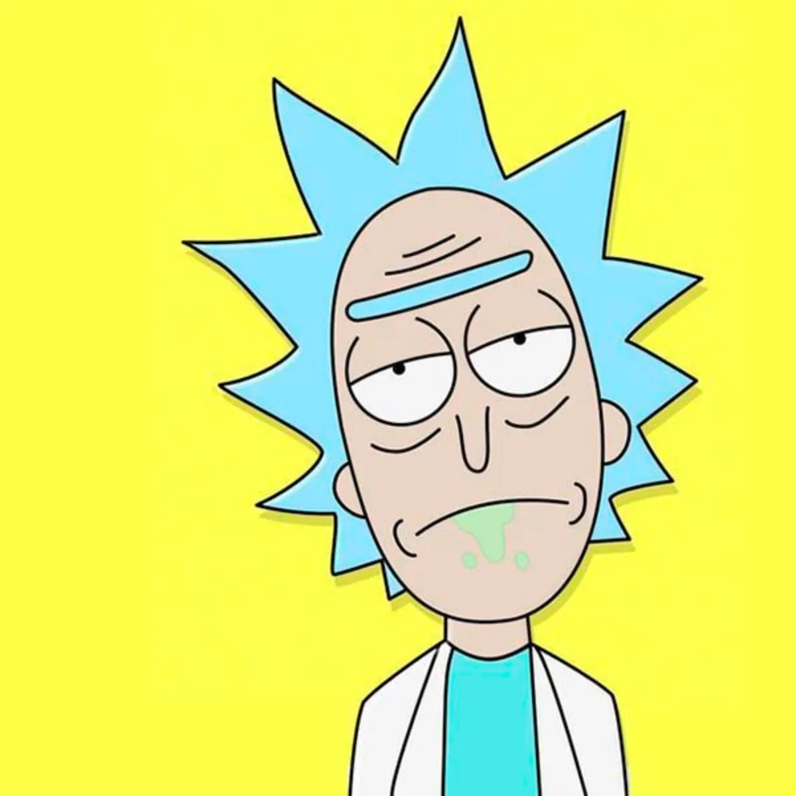

<nav class="navbar px-3 shadow">
  <!-- Logo o título -->
  <a class="navbar-brand d-flex align-items-center gap-2" href="#">
    
    <span>Rick y Morty</span>
  </a>

  <!-- Botón del offcanvas -->
  <button
    class="btn btn-dark"
    type="button"
    data-bs-toggle="offcanvas"
    data-bs-target="#menuOffcanvas"
    aria-controls="menuOffcanvas"
  >
    <i class="bi bi-list fs-4"></i>
  </button>
</nav>

<div
  class="offcanvas offcanvas-start text-bg-dark"
  tabindex="-1"
  id="menuOffcanvas"
  aria-labelledby="menuLabel"
>
  <div class="offcanvas-header">
    <h5 class="offcanvas-title text-light" id="menuLabel">
      <i class="bi bi-stars"></i> Mi Menú
    </h5>
    <button
      type="button"
      class="btn-close btn-close-white"
      data-bs-dismiss="offcanvas"
      aria-label="Close"
    ></button>
  </div>
  <div class="offcanvas-body d-flex flex-column gap-3">
    <a
      routerLink="/personajes"
      class="btn btn-outline-light text-start d-flex align-items-center gap-2"
      data-bs-dismiss="offcanvas"
      aria-label="Close"
    >
      <i class="bi bi-people-fill fs-5"></i> Personajes
    </a>
    <a
      routerLink="/favoritos"
      class="btn btn-outline-warning text-start d-flex align-items-center gap-2"
      data-bs-dismiss="offcanvas"
      aria-label="Close"
    >
      <i class="bi bi-star-fill fs-5"></i> Favoritos
    </a>
    <hr class="text-light" />
    <p class="text-light">
      <i class="bi bi-info-circle"></i> Explora y guarda tus personajes
      favoritos.
    </p>
  </div>
</div>
<div class="pantallas">
  <router-outlet />
</div>
